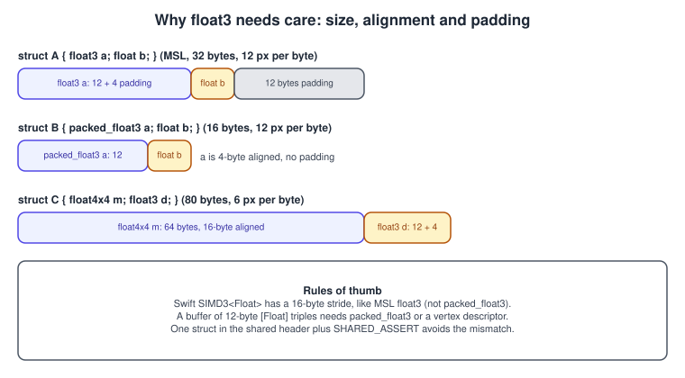
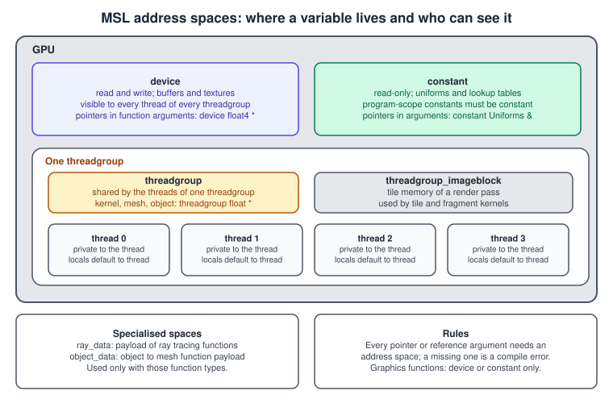
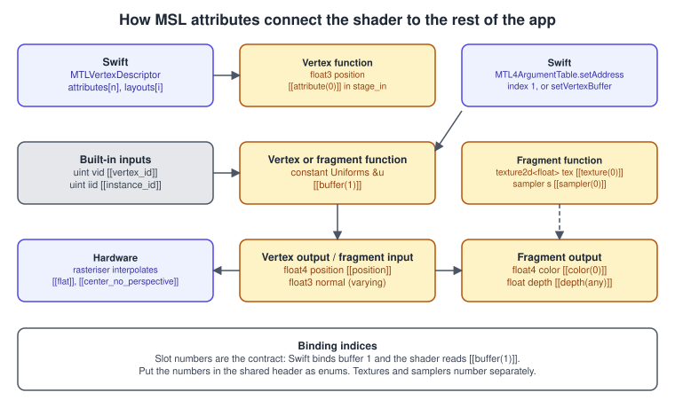
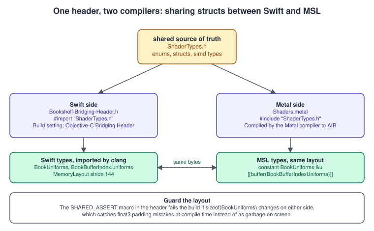
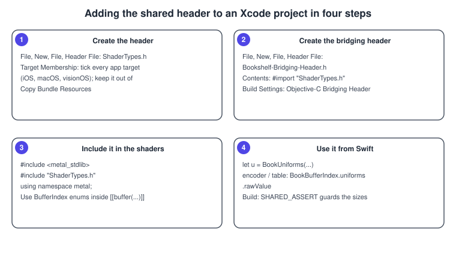
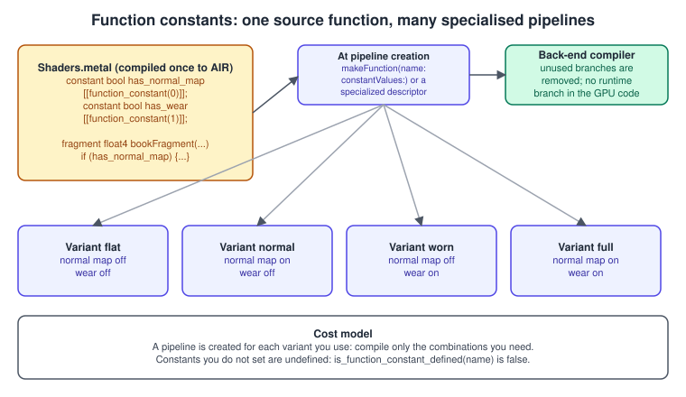

The Metal Shading Language
|
This content was generated with the assistance of AI and should be verified against the official documentation before being relied on in production. |
The Metal Shading Language is the language of every function that runs on an Apple GPU: vertex, fragment, kernel, mesh, object, intersection and tile functions are all written in it. It is C++17 with the parts a GPU cannot support removed (exceptions, virtual functions, most of the standard library, new and delete before 4.1) and the parts a GPU needs added (vector and matrix types, address spaces, attributes that bind a variable to a resource or to a hardware input, and a standard library of math, texture and synchronisation functions). Because the language is close to C++, most of the learning is in four places: the address spaces, the attributes, how data is laid out in memory so that Swift and the shader agree, and function constants that let one function compile into many specialised pipelines. This page covers those four, plus the compiler options that change how arithmetic behaves.
The facts were checked in November 2026. The version documented is MSL 4.1 (specification dated 4 June 2026, -std=metal4.1, MTLLanguageVersion.version4_1
on the 27 operating systems) and MSL 4.0 (-std=metal4.0, MTLLanguageVersion.version4_0, the 26 operating systems). Metal 4 and later is
based on C++17; earlier language versions are based on C++14. Shaders compile with Xcode 26 or later (the Metal Toolchain is a separate Xcode component, see
Setting Up Xcode and a Metal Project); targeting the 27 systems with MSL 4.1 needs Xcode 27 on an Apple-silicon Mac. Everything on this page
runs on iOS, iPadOS, macOS, tvOS and visionOS; the Metal 4 API types referenced here need an A14 or M1 and later.
In the Bookshelf running example this page defines the shared header that every later shader includes, extends the book’s fragment function with function constants (an optional wear mask and a variable number of lamps), and explains why the structs are declared once and shared. The pipeline that consumes the shaders is described in The Metal Render Pipeline; how other languages compare is in Shading Languages Landscape, and the OpenGL equivalent is The GLSL Language.
Language versions and compiler options
| Language version | Compiler option | MTLLanguageVersion |
Operating systems | Notable additions |
|---|---|---|---|---|
MSL 3.0 |
|
|
iOS 16, macOS 13 |
Mesh and object functions (the |
MSL 3.2 |
|
|
iOS 18, macOS 15 |
Lambda expressions, logging from shaders on Apple silicon. |
MSL 4.0 |
|
|
iOS 26, macOS 26 |
C++17 base, tensors and Metal Performance Primitives; shader parameters are still bound with the same |
MSL 4.1 |
|
|
iOS 27, macOS 27 |
Placement |
Xcode selects the version with the Metal Language Revision build setting; at run time the version of an online-compiled library comes from MTLCompileOptions.languageVersion. The same options
object exposes mathMode, mathFloatingPointFunctions, fastMathEnabled, preprocessorMacros, enableLogging, preserveInvariance,
optimizationLevel, libraryType and maxTotalThreadsPerThreadgroup. Useful predefined macros are __METAL_VERSION__ (the language revision as an integer) and __METAL_MACOS__, __METAL_IOS__ and
__METAL__, so a shader can adapt to the language level or platform it is compiled for. The offline compiler additionally accepts -D and -I for macros and header search paths.
What is not available, so you do not look for it: no standard C++ library (use the Metal standard library instead), no exceptions, no dynamic_cast or RTTI, no goto, no thread_local, no virtual functions or
derived classes, and new and delete only as placement new from 4.1. Function pointers exist from MSL 2.3, recursion only in compute functions from MSL 2.4, and lambdas from MSL 3.2.
Types
Scalars, vectors and matrices
Scalars are bool, char, short, int, long (and unsigned forms), half (16-bit float), bfloat (16-bit brain float) and float. Vectors are float2, float3, float4 and so on for
every scalar type. Components are accessed with .xyzw or .rgba and may be swizzled (v.zyx, c.rrr). Matrices are written columns by rows: float4x4 has four columns of
four rows; float3x2 has three columns of two rows. They are column-major: m[1] is the second column, and m * v multiplies a column vector. This matches the simd types in Swift (see
Math for 3D with simd).
| Type | Size (bytes) | Alignment (bytes) | Comment |
|---|---|---|---|
|
8 |
8 |
|
|
16 |
16 |
Occupies a four-component slot: the fourth component is padding. |
|
16 |
16 |
|
|
8 |
8 |
|
|
16 |
16 |
|
|
12 |
4 |
Tightly packed storage type, no padding. Converts to and from |
|
48 |
16 |
Three columns, each a padded |
|
64 |
16 |
|
|
32 |
8 |
The packed_ types (packed_float3, packed_half4, packed_uchar4, …) are storage formats for arrays of vertices and similar data: they have the alignment of their scalar, so a buffer of 12-byte positions is a
device const packed_float3 *. Do computation on the unpacked types.

Textures, samplers and other resources
texture2d<float, access::sample> tex (the access defaults to sample), texturecube<float>, texture2d_array<float>, depth2d<float> and texture3d<float> are types you receive as arguments; the template
argument is the type that sampling returns, not the storage format. A sampler is either an argument bound at [[sampler(n)]] or a constexpr sampler declared in the shader, which needs no binding:
constexpr sampler bookSampler(coord::normalized, address::clamp_to_edge,
filter::linear, mip_filter::linear);
float4 color = cover.sample(bookSampler, in.uv);Other resource-like types: atomic_int and atomic_uint (and wider ones), array<T, N>, device T * pointers, constant references, ray, intersector, acceleration_structure, mesh<...>,
visible_function_table and, in Metal 4, tensor<...>. Textures and samplers are covered in Textures and Samplers.
Function qualifiers
| Qualifier | Meaning | Where it is used |
|---|---|---|
|
Runs per vertex; returns the per-vertex outputs |
|
|
Runs per fragment; returns the colour (and optionally depth) |
The same page |
|
A compute function; returns |
|
|
Mesh pipeline functions |
|
|
Custom ray intersection functions |
|
|
Functions that can be linked, called through function tables, or stitched at run time |
|
|
Run the depth and stencil tests before the fragment function |
The render pipeline page |
A function without one of these qualifiers is an ordinary helper that can be called from the others. Graphics and kernel functions cannot be overloaded.
Address spaces

An address space says which memory a pointer or reference points into and what you may do with it. Every pointer or reference declared as a parameter of a graphics or kernel function must name one, and a declaration without one is a compile error.
| Address space | Access | Lifetime and visibility | Typical use |
|---|---|---|---|
|
read and write |
Buffer memory from the device’s memory pool; visible to all threads |
Vertex arrays, output buffers, particle state, any large or writable data. Textures live here implicitly and need no qualifier. |
|
read only |
Buffer memory read uniformly by all threads, or program-scope constants initialised in the declaration (they must be core constant expressions) |
Uniforms and small tables. Buffers in this space have a minimum offset alignment per GPU (Feature Set Tables). Writing to it is a compile error. |
|
read and write |
Per-thread; the default for variables declared inside a function |
Local variables, arrays, and pointers to them. |
|
read and write |
Shared by the threads of one threadgroup; exists for the threadgroup’s lifetime (and across mid-render and fragment tile kernels over a tile) |
Compute reductions, tiles of data, mesh and object functions. Declared in the kernel body, or as a pointer argument sized from the API with |
|
read and write |
Tile (imageblock) memory of a render pass |
Tile shaders and programmable blending, see Deferred and Tile Shading. |
|
read and write |
Payload shared across ray tracing functions |
Intersection functions. |
|
read and write |
Payload from an object function to its mesh function |
Mesh shading. |
For graphics functions a pointer or reference argument must be in device or constant. For kernel functions device, threadgroup, threadgroup_imageblock and constant are allowed. Marking
read-only buffers constant (or device const) lets the compiler and hardware use faster paths.
A kernel that touches every space in one place, a threadgroup sum reduction:
#include <metal_stdlib>
using namespace metal;
kernel void sumReduce(device const float *input [[buffer(0)]], // read-only device data
device float *partialSums [[buffer(1)]], // writable device data
constant uint &count [[buffer(2)]], // uniform value
threadgroup float *scratch [[threadgroup(0)]],
uint globalIndex [[thread_position_in_grid]],
uint localIndex [[thread_position_in_threadgroup]],
uint groupSize [[threads_per_threadgroup]],
uint groupIndex [[threadgroup_position_in_grid]])
{
float value = globalIndex < count ? input[globalIndex] : 0.0f; // a thread-space local
scratch[localIndex] = value;
threadgroup_barrier(mem_flags::mem_threadgroup);
for (uint stride = groupSize / 2; stride > 0; stride >>= 1) {
if (localIndex < stride) {
scratch[localIndex] += scratch[localIndex + stride];
}
threadgroup_barrier(mem_flags::mem_threadgroup);
}
if (localIndex == 0) {
partialSums[groupIndex] = scratch[0];
}
}On the Swift side the threadgroup argument gets its size from encoder.setThreadgroupMemoryLength(threadsPerGroup * MemoryLayout<Float>.stride, index: 0). The threadgroup size, dispatch rules and the
SIMD-group functions that replace most of this loop are in Compute Kernels.
Attributes: binding a variable to the outside world
Attributes are written in double square brackets after a declaration. They are how the shader says "this parameter is buffer 1", "this field is the clip-space position", or "this value is the thread’s index in the grid".

| Attribute | Used on | Meaning |
|---|---|---|
|
Function parameters |
Bind to slot n of the corresponding binding table. Buffers, textures and samplers are numbered independently. In Metal 4 the buffer slot is the index in the |
|
Pointer parameters in |
Threadgroup memory block n, sized with |
|
One struct parameter of a vertex or fragment function |
The struct’s members come from the vertex descriptor (vertex) or from the rasteriser (fragment). |
|
Members of the vertex |
Vertex attribute n of the |
|
Vertex output; fragment input |
Clip-space position out; window position in (in pixels, with depth in z). |
|
Fragment output members; also input in programmable blending |
Colour attachment m. |
|
Fragment output members |
Write depth or coverage from the shader (disables the early depth test). |
|
Varyings |
Interpolation and sampling mode. |
|
Varyings |
Matches vertex outputs to fragment inputs by name when the structs differ. |
|
Variables and parameters |
Makes the declaration conditional on a function constant (below). |
|
Members of an argument buffer struct |
Position inside an argument buffer, see Argument Buffers and Bindless Resources. |
Built-in inputs
| Function type | Attribute | Type | Value |
|---|---|---|---|
Vertex |
|
|
Index of the vertex in the draw and of the instance; |
Fragment |
|
|
Winding of the primitive, MSAA sample, primitive number and barycentric coordinates. |
Kernel |
|
|
Global index of the thread. |
Kernel |
|
|
Position (or flat index) inside the threadgroup. |
Kernel |
|
|
Which threadgroup, and the sizes. |
Kernel |
|
|
SIMD-group position, see the compute page. |
Attribute names and their legal types are listed per function type in section 5 of the specification; using an attribute with the wrong type is a compile error naming the allowed ones.
Sharing structs with Swift
Every buffer the CPU fills and the GPU reads has a layout. Declaring that layout twice, once in Swift and once in MSL, is the most common source of garbage on screen. The robust approach is to declare it once, in a C header that both compile.

// ShaderTypes.h: included by Swift (via the bridging header) and by MSL
#ifndef ShaderTypes_h
#define ShaderTypes_h
#ifdef __METAL_VERSION__
#define NS_ENUM(_type, _name) enum _name : _type _name; enum _name : _type
#define NSInteger metal::int32_t
#else
#import <Foundation/Foundation.h>
#endif
#include <simd/simd.h>
#if defined(__METAL_VERSION__) || defined(__cplusplus)
#define SHARED_ASSERT(cond, msg) static_assert(cond, msg)
#else
#define SHARED_ASSERT(cond, msg) _Static_assert(cond, msg)
#endif
typedef NS_ENUM(NSInteger, BookBufferIndex) {
BookBufferIndexMeshVertices = 0,
BookBufferIndexUniforms = 1
};
typedef NS_ENUM(NSInteger, VertexAttribute) {
VertexAttributePosition = 0,
VertexAttributeNormal = 1,
VertexAttributeTexCoord = 2
};
typedef NS_ENUM(NSInteger, BookFunctionConstant) {
BookFunctionConstantHasWear = 0,
BookFunctionConstantLampCount = 1
};
typedef struct {
matrix_float4x4 viewProjection; // offset 0, 64 bytes
matrix_float4x4 model; // offset 64, 64 bytes
vector_float3 lightDirection; // offset 128, 16 bytes (a float3 occupies a full slot)
} BookUniforms;
SHARED_ASSERT(sizeof(BookUniforms) == 144, "BookUniforms layout changed: update both sides");
#endif /* ShaderTypes_h */Source: Apple: Drawing a triangle with Metal 4 (its ShaderTypes.h uses the same macro pattern)

-
Create
ShaderTypes.h. In Xcode, File, New, File, choose Header File. In the File Inspector tick every app target (iOS, macOS and visionOS share one source). -
Create the bridging header (for example
Bookshelf-Bridging-Header.h) containing#import "ShaderTypes.h", and set the Objective-C Bridging Header build setting of each Swift target to its path. A Swift package target cannot use a bridging header: put the header in a C target (include/ShaderTypes.hplus a module map the package generates) andimportthat module from Swift. -
Include the header in the
.metalfile with#include "ShaderTypes.h"after<metal_stdlib>. A header in the same directory is found automatically; for others add a Metal header search path (the offline compiler’s-I). -
Use the types from Swift. C structs import with memberwise initialisers,
matrix_float4x4becomessimd_float4x4,vector_float3becomesSIMD3<Float>, and anNS_ENUMbecomes a Swift enum with the common prefix removed, soBookBufferIndexUniformsisBookBufferIndex.uniformsand itsrawValueis theIntyou pass as a binding index.
Rules that keep the two sides identical:
-
Use
simdtypes in shared structs (vector_float4,matrix_float4x4,vector_uint2), which have the same size and alignment in C, in Swift and in MSL. -
Never put
NSIntegerorintof unknown width in a struct: the macro above makesNSInteger32 bits in MSL but 64 in Swift. Useint32_t,uint32_tandfloatin shared structs; keepNSIntegerfor enum backing only. -
vector_float3takes 16 bytes. If you need the 12-byte form, declarepacked_float3in MSL and three separate floats on the C side. -
Keep a
SHARED_ASSERTofsizeoffor each struct that crosses the boundary. The check runs in the Metal compiler and the C compiler, so a change to one side breaks the build. -
Resource handles such as textures are never in these structs; they go in argument buffers (see Argument Buffers and Bindless Resources).
Function constants
A function constant is a value that is fixed when a pipeline is created, not when the shader is compiled to the library and not when it runs. The shader is compiled once to an intermediate form; when you make the pipeline you supply the constant values, and the back-end compiler removes unused branches, can unroll loops whose bound is the constant, and drops unused parameters. The cost of a variant is paid at load time instead of per pixel.

// Shaders.metal: the textured book fragment function with two function constants
#include <metal_stdlib>
#include "ShaderTypes.h"
using namespace metal;
constant bool hasWear [[function_constant(BookFunctionConstantHasWear)]];
constant uint lampCount [[function_constant(BookFunctionConstantLampCount)]];
struct BookVertexOut {
float4 position [[position]];
float3 worldNormal;
float2 uv;
};
fragment float4 bookFragment(BookVertexOut in [[stage_in]],
constant BookUniforms &uniforms [[buffer(BookBufferIndexUniforms)]],
texture2d<float> cover [[texture(0)]],
texture2d<float> wear [[texture(1), function_constant(hasWear)]])
{
constexpr sampler s(coord::normalized, address::clamp_to_edge, filter::linear, mip_filter::linear);
float3 albedo = cover.sample(s, in.uv).rgb;
if (hasWear) { // removed from the binary when hasWear is false
albedo *= 1.0 - 0.5 * wear.sample(s, in.uv).r;
}
float3 n = normalize(in.worldNormal);
float lighting = 0.2;
for (uint i = 0; i < lampCount; ++i) { // a constant trip count: the compiler unrolls it
float3 toLamp = normalize(float3(0.3 * float(i + 1), 1.0, 0.4));
lighting += saturate(dot(n, toLamp)) / float(lampCount);
}
return float4(albedo * lighting, 1.0);
}On the Swift side the values go in an MTLFunctionConstantValues. Metal 3 asks the library for the specialised function; Metal 4 wraps the function descriptor and the values in a specialised function descriptor
so the compiler can do it as part of the pipeline build.
import Metal
struct BookVariant: Hashable {
var hasWear: Bool
var lampCount: UInt32
}
func makeConstantValues(for variant: BookVariant) -> MTLFunctionConstantValues {
let values = MTLFunctionConstantValues()
var hasWear = variant.hasWear
var lampCount = variant.lampCount
values.setConstantValue(&hasWear, type: .bool, index: BookFunctionConstant.hasWear.rawValue)
values.setConstantValue(&lampCount, type: .uint, index: BookFunctionConstant.lampCount.rawValue)
return values
}
// Metal 3: the specialised MTLFunction goes straight into the pipeline descriptor.
func fragmentFunctionMetal3(library: MTLLibrary, variant: BookVariant) throws -> MTLFunction {
try library.makeFunction(name: "bookFragment", constantValues: makeConstantValues(for: variant))
}
// Metal 4: a specialised function descriptor wraps the library function descriptor.
@available(iOS 26.0, macOS 26.0, tvOS 26.0, visionOS 26.0, *)
func fragmentDescriptorMetal4(library: MTLLibrary, variant: BookVariant) -> MTL4SpecializedFunctionDescriptor {
let base = MTL4LibraryFunctionDescriptor()
base.library = library
base.name = "bookFragment"
let specialized = MTL4SpecializedFunctionDescriptor()
specialized.functionDescriptor = base
specialized.constantValues = makeConstantValues(for: variant)
return specialized // assign to MTL4RenderPipelineDescriptor.fragmentFunctionDescriptor
}
/// A cache so each variant is compiled once.
@MainActor
final class BookPipelineCache {
private var pipelines: [BookVariant: MTLRenderPipelineState] = [:]
func pipeline(for variant: BookVariant, make: (BookVariant) throws -> MTLRenderPipelineState) rethrows -> MTLRenderPipelineState {
if let existing = pipelines[variant] { return existing }
let created = try make(variant)
pipelines[variant] = created
return created
}
}Source: Apple: MTLFunctionConstantValues
Details that matter:
-
Types and indices. A function constant is a scalar or vector (a struct or an array is a compile error), and its index is between 0 and 65535. The
MTLDataTypepassed tosetConstantValuemust match the declared type; a mismatch fails when the function is created. -
What they can control. Code paths that get compiled, optional arguments of graphics, kernel and helper functions, and optional members of a
[[stage_in]]struct. -
Index or name. Constants are numbered with
[[function_constant(n)]].setConstantValue(_:type:index:)uses the number;setConstantValue(_:type:withName:)uses the variable’s name. Numbers in a shared header keep both sides in sync. -
Defined or not.
is_function_constant_defined(name)tells the shader whether the API supplied a value, which lets one source serve both "feature present" and "feature unknown" callers. The simplest rule is to define every constant the function uses. -
Conditional parameters. Adding
function_constant(name)inside a parameter’s attribute list removes that parameter from the signature when the constant is false or undefined, so the pipeline needs no binding for it. -
Replace preprocessor variants. The traditional alternative is
-Dmacros, which means one library per variant or runtime source compilation. Function constants keep one library and specialise lazily. -
Count. Variants multiply: ten boolean constants allow 1,024 combinations. Create only the pipelines you use, cache them by key, and consider pre-compiling the likely ones with binary archives.
-
Relation to other mechanisms. Branching on a uniform costs a branch for every thread each draw; function constants cost nothing at run time but need a pipeline per variant;
[[visible]]and[[stitchable]]functions let you link pieces at run time instead.
Math, precision and logging
-
Fast math by default. The compiler’s default
-fmetal-math-modeisfastand-fmetal-math-fp32-functionsisfast: the compiler may assume no NaNs or infinities, no signed zeros, allow reassociation and use fused multiply-add. A division by a value that can be zero is then undefined behaviour.relaxedkeeps infinities and NaNs but still optimises aggressively, andsafedisables unsafe transformations. In anMTLCompileOptionssetmathModeandmathFloatingPointFunctions; the legacy-ffast-mathand-fno-fast-mathmap to these settings.#pragma METAL fp math_mode(safe)scopes it to a block. -
half versus float.
halfhalves register and bandwidth cost and is enough for colours; usefloatfor positions, matrix products and accumulation. Mixed arithmetic promotes tofloat, and a strayfloatliteral (1.0) in ahalfexpression promotes the whole expression, so write1.0hwhere it matters. -
Rounding. From MSL 4.1 the default rounding mode of float-to-float conversions can be set to round toward zero.
-
Logging. On Apple silicon, MSL 3.2 and later can log from a shader with
<metal_logging>and anos_logobject; compile with logging enabled (-fmetal-enable-logging, orMTLCompileOptions.enableLogging) and attach anMTLLogStateto the command buffer (Metal 4:MTL4CommandBufferOptions.logState). See Debugging and Profiling Metal.
Compiling shaders
Xcode compiles every .metal file of the target to AIR (Apple’s intermediate representation) and links them into default.metallib in the app bundle; device.makeDefaultLibrary() loads it. The same steps on the
command line are xcrun metal -c Shaders.metal -o Shaders.air followed by xcrun metallib Shaders.air -o default.metallib, with -std=metal4.0 (or 4.1) selecting the language. Compiling source at run time
(device.makeLibrary(source:options:)) is useful for tools and experiments but is slower than a pre-built library and should not be on a shipping app’s critical path. The build setup, including the Metal Toolchain
component, is in Setting Up Xcode and a Metal Project, and pipeline caching is in
Shader Compilation and Pipeline Caching.
Source: Apple: Shader libraries
Common mistakes
| Symptom | Cause | Fix |
|---|---|---|
"missing address space qualifier" compile error |
A pointer or reference parameter has no |
Add the right address space; for read-only buffers prefer |
Colours or positions garbled, normals wrong |
|
Share the struct through the header; use |
A uniform struct seems offset by a few bytes |
|
Use |
Rotation or projection looks transposed |
Matrix built row-major, or |
MSL matrices are column-major; with simd matrices on the Swift side write |
NaN or infinity propagates into the image although the code guards for it |
Fast math assumes no NaNs or infinities, so the guard can be removed |
Set |
Function constant error when the pipeline is created |
Wrong |
Match types, define every used constant and keep indices in the shared header. |
Integer varying is garbage between stages |
Integer outputs are interpolated unless marked |
Mark integer members with |
Shader works in Debug but not in Release |
Uninitialised |
Initialise locals; add |
Performance notes
-
Use the smallest type that is accurate enough;
halfarithmetic is cheaper on every Apple GPU. -
Use
constantfor small, uniformly read data anddevice constfor large read-only arrays; both beat writabledevicefor the optimiser. -
Prefer function constants over runtime branches for per-draw decisions, and
select,mix,stepandsaturateover data-dependentiffor per-pixel ones. -
Keep per-thread state small: many live variables reduce the number of threads the GPU can keep in flight, which lowers latency hiding.
-
Move invariant work out of the fragment function into the vertex function or the CPU.
-
Barriers and atomics are expensive; prefer SIMD-group functions inside a SIMD group.
What changed recently
| Version | Change |
|---|---|
MSL 3.0 (iOS 16, macOS 13) |
Mesh and object functions. |
MSL 3.2 (iOS 18, macOS 15) |
Lambdas; shader logging on Apple silicon; math mode options with Xcode 16. |
MSL 4.0 (26 systems, 2025) |
C++17 base; tensors and Metal Performance Primitives; the Metal 4 binding model. |
MSL 4.1 (27 systems, spec dated 2026-06-04) |
Placement |
Where the books are out of date
| Source | Statement | Today |
|---|---|---|
Metal by Tutorials, 4th edition (chapters 3, 4 and 7) |
Targets Metal 3 with Xcode 15, macOS 14 and iOS 17. The 5th edition (November 2025) moved to Swift 6 and the 26 SDKs but still teaches Metal 3. |
MSL 4.0 (26 systems) and 4.1 (27 systems) are the current language versions; Xcode 27 needs an Apple-silicon Mac on macOS 26.6 or later, and Metal 4 needs an A14 or M1. |
Metal Programming Guide (Clayton), chapters 5 and 7 |
Written for Metal 2, Swift 4, Xcode 9 and iOS 11, with |
|